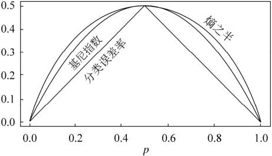
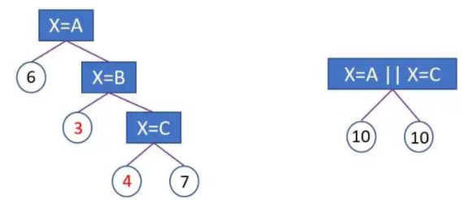
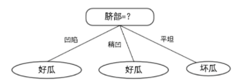
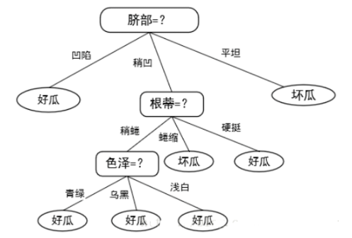
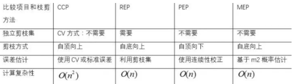
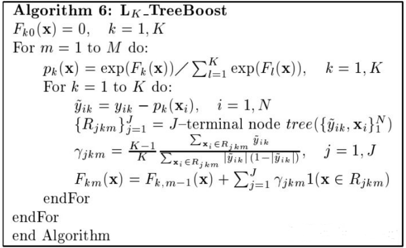
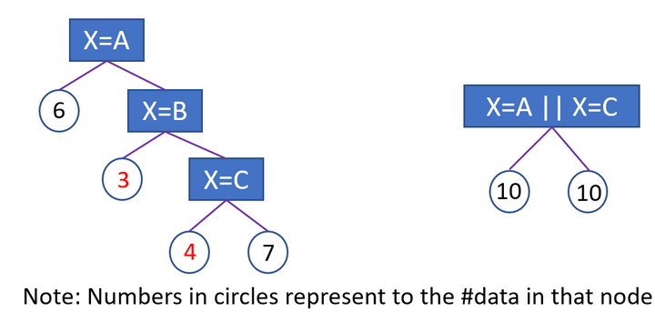

树模型
基础树
介绍下ID3和C4.5?
构造决策树有多种算法，国际上最早的、具有影响力的决策树是由Quinlan于1986年提出的ID3算法，是基于信息熵的决策树分类算法。该算法是决策树的一个经典的构造算法，内部使用信息熵以及信息增益来进行构建；每次迭代选择信息增益最大的特征属性作为分割属性。
ID3的优缺点？
优点:
决策树构建速度快；实现简单；
缺点：
- ID3算法避免了搜索不完整假设空间的一个主要风险：假设空间可能不包含目标函数。
- ID3算法在搜索的每一步都使用当前的所有训练样例，大大降低了对个别训练样例错误的敏感性。
- ID3算法在搜索过程中不进行回溯。所以，它易受无回溯的爬山搜索中的常见风险影响：收敛到局部最优而不是全局最优。
- ID3算法只能处理离散值的属性。
- 信息增益度量存在一个内在偏置，它偏袒具有较多值的属性。
- ID3算法增长树的每一个分支的深度，直到恰好能对训练样例完美地分类，存在决策树过度拟合。
- ID3算法没有考虑缺失值的情况
ID3划分特征的标准是什么？
ID3 使用的分类标准是信息增益，它表示得知特征 A 的信息而使得样本集合不确定性减少的程度。信息增益=信息熵-条件熵：
$$ G{\rm{ai}}n(D,A) = H(D) - H(D|A) $$信息增益越大表示使用特征 A 来划分所获得的“纯度提升越大”。
介绍下C4.5算法？
算法发明者Quinlan于1993年又提出了ID3的改进版本C4.5算法，C4.5算法用信息增益率来选择决策属性，它继承了ID3算法的全部优点，在ID3的基础上还增加了对连续属性的离散化、对未知属性的处理和产生规则等功能。
C4.5的划分标准是什么？
利用信息增益比可以克服信息增益的缺点，其公式为:
$$ I(D,A) = \frac{{I(D,A)}}{{H(D)}} $$这里是特征熵，特征越多对应的特征熵越大，它作为分母，可以校正信息增益容易偏向取值较多的特征的问题。
CART是如何处理类别不平衡问题的？
CART 的一大优势在于：无论训练数据集有多失衡，它都可以将其自动消除，而不需要建模人员采取其他操作。
CART 使用了一种先验机制，其作用相当于对类别进行加权。这种先验机制嵌入于 CART 算法判断分裂优劣的运算里，在 CART 默认的分类模式中，总是要计算每个节点关于根节点的类别频率的比值，这就相当于对数据自动重加权，对类别进行均衡。
对于一个二分类问题，节点 node 被分成类别 1 当且仅当：
$$ \frac{{{N_1}(node)}}{{{N_1}(root)}} > \frac{{{N_0}(node)}}{{{N_0}(root)}} $$比如二分类，根节点属于 1 类和 0 类的分别有 20 和 80 个。在子节点上有 30 个样本，其中属于 1 类和 0 类的分别是 10 和 20 个。如果 10/20>20/80，该节点就属于 1 类。
通过这种计算方式就无需管理数据真实的类别分布。假设有 K 个目标类别，就可以确保根节点中每个类别的概率都是 1/K。这种默认的模式被称为“先验相等”。先验设置和加权不同之处在于先验不影响每个节点中的各类别样本的数量或者份额。先验影响的是每个节点的类别赋值和树生长过程中分裂的选择。
C4.5划分标准的缺陷是什么？
采用的是信息增益比，信息增益率对可取值较少的特征有所偏好（分母越小，整体越大），因此 C4.5 并不是直接用增益率最大的特征进行划分，而是使用一个启发式方法：先从候选划分特征中找到信息增益高于平均值的特征，再从中选择增益率最高的。
C4.5算法的优缺点？
C4.5算法的优点是产生的分类规则易于理解，准确率较高。缺点就是在构造树的过程中，需要对数据集进行多次的顺序扫描和排序，因而导致算法的低效。此外，C4.5算法只适合于能够驻留于内存的数据集，当训练集大得无法在内存容纳时，程序无法运行。
C4.5如何处理缺失值？
C4.5对于缺失值的处理主要有以下步骤：
对于具有缺失值特征，用没有缺失的样本子集所占比重来折算；选定该划分特征，对于缺失该特征值的样本同时划分到所有子节点，不过要调整样本的权重值，其实也就是以不同概率划分到不同节点中。
ID3和C4.5区别？
相比于之前的ID3算法，C4.5进行了改进。主要如下
- 用信息增益率来选择划分特征，克服了用信息增益选择的不足，但信息增益率对可取值数目较少的属性有所偏好；
- 能够处理离散型和连续型的属性类型，即将连续型的属性进行离散化处理；
- 能够处理具有缺失属性值的训练数据；
- 在构造树的过程中进行剪枝；
CART是如何对连续值处理的？
对于连续值的处理，CART分类树采用基尼系数的大小来度量特征的各个划分点。在回归模型中，我们使用常见的和方差度量方式，对于任意划分特征 A，对应的任意划分点 s 两边划分成的数据集和D1和D2，求出使各自集合的均方差最小，同时两个的均方差之和最小所对应的特征和特征值划分点。表达式为：
$$ {\min _{a,s}}[{\min _{{c_1}}}\sum\limits_{{x_i} \in {D_1}} {{{({y_i} - {c_1})}^2}} + {\min _{{c_2}}}\sum\limits_{{x_i} \in {D_2}} {{{({y_i} - {c_2})}^2}} ] $$其中，为数据集得到样本输出均值，为数据集的样本输出均值。
CART算法为什么选用gini指数？
介绍下熵的公式：
$$ H(x) = - \sum\limits_{k = 1}^K {{p_k}\ln ({p_k})} $$将其在x=1处进行泰勒展开
$$ H(x) = - \sum\limits_{k = 1}^K {{p_k}\ln ({p_k})} = - \sum\limits_{k = 1}^K {{p_k}(1 - {p_k})} $$比较一下的结果如下，别人总结的

基尼系数的的定义及其优势是什么？
熵模型拥有大量耗时的对数运算，基尼指数在简化模型的同时还保留了熵模型的优点。
基尼系数的计算公式如下所示：
$$ G{\rm{i}}ni(p) = \sum\limits_{k - 1}^K {{p_k}(1 - {p_k}) = 1 - \sum\limits_{k = 1}^K {{p^2}_k} } $$代表了模型的不纯度，基尼系数越小，不纯度越低，特征越好。这和信息增益（率）正好相反。
基尼系数的优点：在保证准确率的情况下大大减小了计算量。
基尼指数反映了从数据集中随机抽取两个样本，其类别标记不一致的概率。因此基尼指数越小，则数据集纯度越高。基尼指数偏向于特征值较多的特征，类似信息增益。基尼指数可以用来度量任何不均匀分布，是介于 0~1 之间的数，0是完全相等，1是完全不相等
CART是如何在特征值缺失的情况下进行划分特征的选择？
CART 一开始严格要求分裂特征评估时只能使用在该特征上没有缺失值的那部分数据，在后续版本中，CART 算法使用了一种惩罚机制来抑制提升值，从而反映出缺失值的影响（例如，如果一个特征在节点的 20% 的记录是缺失的，那么这个特征就会减少 20% 或者其他数值）。
CART模型对于缺失该特征值的样本该进行怎样处理？
CART 算法的机制是为树的每个节点都找到代理分裂器，无论在训练数据上得到的树是否有缺失值都会这样做。在代理分裂器中，特征的分值必须超过默认规则的性能才有资格作为代理（即代理就是代替缺失值特征作为划分特征的特征），当 CART 树中遇到缺失值时，这个实例划分到左边还是右边是决定于其排名最高的代理，如果这个代理的值也缺失了，那么就使用排名第二的代理，以此类推，如果所有代理值都缺失，那么默认规则就是把样本划分到较大的那个子节点。代理分裂器可以确保无缺失训练数据上得到的树可以用来处理包含确实值的新数据。
决策树出现过拟合的原因及其解决办法？
对训练数据预测效果很好，但是测试数据预测效果较差的现象称为过拟合。
原因：
在决策树构建的过程中，对决策树的生长没有进行合理的限制（剪枝）；
样本中有一些噪声数据，没有对噪声数据进行有效的剔除；
在构建决策树过程中使用了较多的输出变量，变量较多也容易产生过拟合
解决办法
选择合理的参数进行剪枝，可以分为预剪枝和后剪枝，我们一般采用后剪枝的方法；
利用K−folds交叉验证，将训练集分为K份，然后进行K次交叉验证，每次使用K−1份作为训练样本数据集，另外一份作为测试集；
减少特征，计算每一个特征和响应变量的相关性，常见得为皮尔逊相关系数，将相关性较小的变量剔除；当然还有一些其他的方法来进行特征筛选，比如基于决策树的特征筛选，通过正则化的方式来进行特征选取等（决策的正则化）。
为什么C4.5能处理连续特征而ID3不行？
这是因为ID3在设计的时候根本就没考虑过要处理连续特征，所以它自然就不能处理连续特征。那为什么ID3不考虑连续特征？这是因为任何研究都是循循渐进的，每一个研究只会将精力放在当前最重要的研究点之上。ID3与C4.5都是Quinlan 的作品，而ID3的研究重点是如何设计高效的节点分裂方法来生长决策树，因此它并不太在意如何去处理连续特征。为此，ID3提出了使用信息增益来衡量一次节点分裂的优劣，它是第一个成功将信息论相关理论使用到决策树算法中的，从这点来看它的时代意义比较重要。因此从学术贡献来看，它确实也没有必要再去处理一些琐碎而简单的问题了。而C4.5的重点则是将ID3的成果工程化，让决策树能真正解决实际中的复杂问题，所以C4.5设计了详细的连续特征处理方法和剪枝算法。以现在的眼光来看，只要你愿意，可以很容易地将ID3改造为有能力处理连续特征的决策树。
剪枝的策略是啥?
在决策树算法中，为了尽可能正确分类训练样本， 节点划分过程不断重复， 有时候会造成决策树分支过多，以至于将训练样本集自身特点当作泛化特点， 而导致过拟合。因此可以采用剪枝处理来去掉一些分支来降低过拟合的风险。
剪枝的基本策略有预剪枝（pre-pruning）和后剪枝（post-pruning）。
预剪枝：在决策树生成过程中，在每个节点划分前先估计其划分后的泛化性能， 如果不能提升，则停止划分，将当前节点标记为叶结点。
后剪枝：生成决策树以后，再自下而上对非叶结点进行考察， 若将此节点标记为叶结点可以带来泛化性能提升，则修改之。
树模型one_hot有哪些问题？
one-hot coding是类别特征的一种通用解决方法，然而在树模型里面，这并不是一个比较好的方案，尤其当类别特征维度很高的时候。主要的问题是：
1.可能无法在这个类别特征上进行切分。使用one-hot coding的话，意味着在每一个决策节点上只能用 one-vs-rest (例如是不是狗，是不是猫，等等) 的切分方式。当特征纬度高时，每个类别上的数据都会比较少，这时候产生的切分不平衡，切分增益（split gain）也会很小（比较直观的理解是，不平衡的切分和不切分几乎没有区别）。
2.会影响决策树的学习。因为就算可以在这个类别特征进行切分，也会把数据切分到很多零散的小空间上，如图1左所示。而决策树学习时利用的是统计信息，在这些数据量小的空间上，统计信息不准确，学习会变差。但如果使用图1右边的切分方法，数据会被切分到两个比较大的空间，进一步的学习也会更好。

如何解决树模型中one_hot的问题?
1.类别特征的最优切分。这个方法需要对应工具的支持，我所知的支持这个方法的工具有h2o.gbm和LightGBM,用LightGBM可以直接输入类别特征，并产生同图1右边的最优切分。在一个k维的类别特征寻找最优切分，朴素的枚举算法的复杂度是指数的 O(2^k)。LightGBM 用了一个 O(klogk)[1] 的算法。算法流程如图2所示：在枚举分割点之前，先把直方图按照每个类别对应的label均值进行排序；然后按照排序的结果依次枚举最优分割点。当然，这个方法很容易过拟合，所以LightGBM里面还增加了很多对于这个方法的约束和正则化。图3是一个简单的对比实验，可以看到Optimal的切分方法在AUC提高了1.5个点，并且时间只多了20% 。
2.转成数值特征。在使用 sklearn 或 XGBoost 等不支持类别特征的最优切分工具时，可以用这个方法。常见的转换方法有: a) 把类别特征转成one-hot coding扔到NN里训练个embedding；b) 类似于CTR特征，统计每个类别对应的label(训练目标)的均值。统计的时候有一些小技巧，比如不把自身的label算进去(leave-me-out, leave-one-out)统计， 防止信息泄露。
3.其他的编码方法，比如binary coding等等，同样可以用于不支持类别特征的算法。这里有一个比较好的开源项目，封装了常见的各种编码方法: https://github.com/scikit-learn-contrib/category_encoders
为啥决策树后剪枝比预剪枝要好？
-
预剪枝
预剪枝使得决策树的很多分支没有展开，也就是没有一步一步计算然后分裂下去了，这不仅降低了过拟合的风险，还显著减少了树模型的训练时间开销。但是另一方面，有些分支的当前划分虽不能提升泛化性能、甚至可能导致泛化性能暂时下降，但是在其基础上进行的后续划分有可能导致性能显著提升(但是我们简单嘛，就不继续划分了)。预剪枝基于贪心本质，抱着能多剪就多剪枝从而招来欠拟合的风险。采用这种方法得到的决策树可能就是如下这种：

可以看到在这棵树比价简单，泛化性能比较好，也不会过拟合，但是就是太太简单了，会导致预测的时候偏差较大，也是我们说的欠拟合。 -
后剪枝
在决策树生成后进行剪枝，这也符合我们做事的逻辑和条理。后剪枝决策树通常比预剪枝决策树保留了更多的分支(所以说计算开销还是比较大滴)。一般情况下，后剪枝决策树的欠拟合风险很小，泛化性能往往优于预剪枝决策树。所以剪枝后的树大概就是你看到的下面的这个样子：

决策树中有哪些剪枝算法
决策树中常见的剪枝算法有：
Reduced-Error Pruning（REP,错误率降低剪枝）
Pesimistic-Error Pruning（PEP,悲观错误剪枝）
Cost-Complexity Pruning（CCP，代价复杂度剪枝）
Minimum Error Pruning （MEP, 最小误差剪枝）
REP：通过一个新的验证集来纠正树的过拟合问题。对于决策树中的每一个非叶子节点的子树，我们将它替换成一个叶子节点，该叶子节点的类别用大多数原则来确定，这样就产生了一个新的相对简化决策树，然后比较这两个决策树在验证集中的表现。如果新的决策树在验证集中的正确率较高，那么该子树就可以替换成叶子节点，从而达到决策树剪枝的目的。
PEP：这个算法和REP差不多，和REP不同之处在于：PEP不需要新的验证集，并且PEP是自上而下剪枝的。由于我们还是用生成决策树时相同的训练样本，那么对于每个节点剪枝后的错分率一定是会上升的，因此在计算错分率时需要加一个惩罚因子0.5。
CPC：CCP算法为子树 $T_i$ 定义了代价和复杂度，以及一个衡量代价与复杂度之间关系的参数 $\alpha$ 。代价指的是在剪枝过程中因子树 $T_i$ 被叶节点替代而增加的错分样本;复杂度表示剪枝后子树 $T_i$ 减少的叶结点数; 从下到上计算每一个非叶节点的 $\alpha$ 值，然后每一次都剪掉具有最小值的子树 ${T_0}{T_1} \cdots {T_n}$ ，最后得到,其中是 $T_0$ 完整的数， $T_n$ 表示根节点，然后根据真实的错误率在 ${T_0}{T_1} \cdots {T_n}$ 中选择一个最好的。
MEP：此方法的基本思路是采用自底向上的方式，对于树中每个非叶节点。首先计算该节点的误差,然后，计算该节点每个分支的误差,并且加权相加，权为每个分支拥有的训练样本比例。如果大于,则保留该子树；否则就剪裁。

详细的结果如上图所示
C4.5采用的剪枝方法是什么？
C4.5 采用的悲观剪枝方法，用递归的方式从低往上针对每一个非叶子节点，评估用一个最佳叶子节点去代替这课子树是否有益。如果剪枝后与剪枝前相比其错误率是保持或者下降，则这棵子树就可以被替换掉。C4.5 通过训练数据集上的错误分类数量来估算未知样本上的错误率。
CART是如何处理类别不平衡问题的？
CART 的一大优势在于：无论训练数据集有多失衡，它都可以将其自动消除，而不需要建模人员采取其他操作。
CART 使用了一种先验机制，其作用相当于对类别进行加权。这种先验机制嵌入于 CART 算法判断分裂优劣的运算里，在 CART 默认的分类模式中，总是要计算每个节点关于根节点的类别频率的比值，这就相当于对数据自动重加权，对类别进行均衡。
说一下ID3、C4.5和CART三者之间的差异？
划分标准的差异：ID3 使用信息增益偏向特征值多的特征，C4.5 使用信息增益率克服信息增益的缺点，偏向于特征值小的特征，CART 使用基尼指数克服 C4.5 需要求 log 的巨大计算量，偏向于特征值较多的特征。
使用场景的差异：ID3 和 C4.5 都只能用于分类问题，CART 可以用于分类和回归问题；ID3 和 C4.5 是多叉树，速度较慢，CART 是二叉树，计算速度很快；
样本数据的差异：ID3 只能处理离散数据且缺失值敏感，C4.5 和 CART 可以处理连续性数据且有多种方式处理缺失值；从样本量考虑的话，小样本建议 C4.5、大样本建议 CART。C4.5 处理过程中需对数据集进行多次扫描排序，处理成本耗时较高，而 CART 本身是一种大样本的统计方法，小样本处理下泛化误差较大 ；
样本特征的差异：ID3 和 C4.5 层级之间只使用一次特征，CART 可多次重复使用特征；
剪枝策略的差异：ID3 没有剪枝策略，C4.5 是通过悲观剪枝策略来修正树的准确性，而 CART 是通过代价复杂度剪枝。
拥有很多特征的决策树最后没有用到的特征一定是无用吗？
不是无用的，从两个角度考虑:
一是特征替代性，如果可以已经使用的特征A和特征B可以提点特征C，特征C可能就没有被使用，但是如果把特征C单独拿出来进行训练，依然有效.
其二，决策树的每一条路径就是计算条件概率的条件，前面的条件如果包含了后面的条件，只是这个条件在这棵树中是无用的，如果把这个条件拿出来也是可以帮助分析数据.
决策树需要进行归一化处理吗？
概率模型不需要归一化，因为他们不关心变量的值，而是关心变量的分布和变量之间的条件概率。决策树是一种概率模型，数值缩放，不影响分裂点位置，对树模型的结构不造成影响。所以一般不对其进行归一化处理。
按照特征值进行排序的，排序的顺序不变，那么所属的分支以及分裂点就不会有不同。
树模型是不能进行梯度下降的，因为构建树模型（回归树）寻找最优点时是通过寻找最优分裂点完成的，因此树模型是阶跃的，阶跃点是不可导的，并且求导没意义，也就不需要归一化。
参考
https://zhuanlan.zhihu.com/p/89901519
https://ask.csdn.net/questions/377838
https://zhuanlan.zhihu.com/p/404072623
https://zhuanlan.zhihu.com/p/481321311
https://www.jianshu.com/p/2abc638490e3
提升树
简单介绍下GBDT的基本原理？
GBDT是一种基于boosting集成思想的加法模型，训练时采用前向分布算法进行贪婪的学习，每次迭代都学习一棵CART树来拟合之前 t-1 棵树的预测结果与训练样本真实值的残差。
什么是梯度提升？
首先，梯度提升是一种基于函数梯度信息的Boosting方法，与梯度下降有异曲同工之妙。
在每一轮迭代时，我们生成一个基学习器，基学习器的拟合目标是当前模型Loss的负梯度。
当训练完成后，我们将该基学习器加入至模型。
重复上述，继续训练基学习器，直至迭代次数达到目标。
梯度提升的优化原理伪代码如下(图中Loss的负梯度使用了残差，即MSE的负梯度)：
为什么用Loss的负梯度来拟合下一棵树？
将函数进行泰勒展开，使Loss朝着当前最小化的方向优化，在函数空间上求解出下一棵树拟合的目标，即Loss的负梯度。梯度下降法通过不断的迭代优化参数，让参数朝着下降速度最快的方向不断下降，逐步达到Loss最小化的目标
为什么GBDT的树深度较RF通常都比较浅？
对于机器学习来说，泛化误差可以理解为两部分，分别是偏差（bias）和方差（variance）；偏差指的是算法的期望预测与真实预测之间的偏差程度，反应了模型本身的拟合能力；方差度量了同等大小的训练集的变动导致学习性能的变化，刻画了数据扰动所导致的影响。当模型越复杂时，拟合的程度就越高，模型的训练偏差就越小；但此时如果换一组数据可能模型的变化就会很大，即模型的方差很大，所以模型过于复杂的时候会导致过拟合。
对于RF来说由于并行训练很多不同的分类器的目的就是降低这个方差（variance）。所以对于每个基分类器来说，目标就是如何降低这个偏差（bias），所以我们会采用深度很深甚至不剪枝的决策树。而对于GBDT来说由于利用的是残差逼近的方式，即在上一轮的基础上更加拟合原数据，所以可以保证偏差（bias），所以对于每个基分类器来说，问题就在于如何选择 variance 更小的分类器，即更简单的分类器，所以我们选择了深度很浅的决策树。
GBDT构建的分类树和回归树的区别是什么？
GBDT构建CART树，无论是分类还是回归，都是使用的回归树，因为分类树无法处理连续值。那么接下来说区别：
1.CART里分类节点分裂时特征选择用gini, 回归用均方差mse，度量目标是对于划分特征A，对应划分点s两边的数据集D1和D2，求出使D1和D2各自集合的均方差最小，同时D1和D2的均方差之和最小。
2.对于决策树建立后做预测的方式，CART分类树采用叶子节点里概率最大的类别作为当前节点的预测类别。回归树输出不是类别，采用叶子节点的均值或者中位数来预测输出结果。
GBDT构建回归和分类的第一颗树是什么？
对于回归树：
${F_0} = avg(y)$对应分类树
${F_0}(x) = \log \frac{{P(Y = 1|x)}}{{1 - P(Y = 1|x)}}$其中， $P(Y = 1|x)$ 是训练样本中 $Y=1$ 的比例，利用先验信息来初始化学习器。
GBDT如何进行多分类的学习？
多分类的伪代码如下：

根据上面的伪代码具体到多分类这个任务上面来，我们假设总体样本共有 $K$ 类。来了一个样本 $x$ ，我们需要使用GBDT来判断 $x$ 属于样本的哪一类。
第一步我们在训练的时候，是针对样本 $x$ 每个可能的类都训练一个分类回归树。举例说明，目前样本有三类，也就是 $K=3$ ，样本 $x$ 属于第二类。那么针对该样本的分类标签，其实可以用一个三维向量 [0,1,0]来表示。 0表示样本不属于该类， 1表示样本属于该类。由于样本已经属于第二类了，所以第二类对应的向量维度为 1 ，其它位置为 0 。
针对样本有三类的情况，我们实质上在每轮训练的时候是同时训练三颗树。第一颗树针对样本 $x$ 的第一类，输入为 $(x,0)$ 。第二颗树输入针对样本 $x$ 的第二类，输入为 $(x,1)$ 。第三颗树针对样本 $x$ 的第三类，输入为 $(x,0) $ 。这里每颗树的训练过程其实就CART树的生成过程。在此我们参照CART生成树的步骤即可解出三颗树，以及三颗树对 $x$ 类别的预测值 $F_{1}(x), F_{2}(x), F_{3}(x)$ , 那么在此类训练中，我们仿照多分类的逻辑回归 ，使用Softmax 来产生概率，则属于类别 1 的概率为：
$$ {p_1}(x) = \frac{{\exp ({F_1}(x))}}{{\sum\limits_{k = 1}^3 {\exp ({F_k}(x))} }} $$并且我们可以针对类别 1 求出残差 ${\tilde y_1} = 0 - {p_1}(x)$ ；类别 2 求出残差 ${\tilde y_2} = 0 - {p_2}(x)$ ；类别 3 求出残差 ${\tilde y_3} = 0 - {p_3}(x)$ 。
然后开始第二轮训练，针对第一类输入为 $(x,{\tilde y_1})$ , 针对第二类输入为 $(x,{\tilde y_2})$ ，针对第三类输入为 $(x,{\tilde y_3})$ 。继续训练出三颗树。一直迭代M轮。每轮构建3颗树。
GBDT常用损失函数有哪些？
MSE(Mean Square Error)均方误差
RMSE(Root Mean Square Error)均方根误差
MAE(Mean Absolute Error)平均绝对误差
Huber Loss(MAE和MSE结合)
为什么GBDT不适合使用高维稀疏特征？
高维稀疏的ID类特征会使树模型的训练变得极为低效，且容易过拟合。
树模型训练过程是一个贪婪选择特征的算法，要从候选特征集合中选择一个使分裂后收益函数增益最大的特征来分裂，按照高维的ID特征做分裂时，子树数量非常多，计算量会非常大，训练会非常慢。
同时，按ID分裂得到的子树的泛化能力比较弱，由于只包含了对应ID值的样本，样本稀疏时也很容易过拟合。
GBDT算法的优缺点？
优点：
预测阶段的计算速度快，树与树之间可并行化计算（注意预测时可并行）；
在分布稠密的数据集上，泛化能力和表达能力都很好；
采用决策树作为弱分类器使得GBDT模型具有：
- 较好的解释性和鲁棒性；
- 能够自动发现特征间的高阶关系；
- 不需要对数据进行特殊的预处理，如归一化等。
缺点：
GBDT在高维稀疏的数据集上表现不佳；
训练过程需要串行训练，只能在决策树内部采用一些局部并行的手段提高训练速度。
GBDT有哪些参数？
- GBDT框架参数
n_estimators:代表弱学习器的最大个数，即最多训练多少棵树。这个值过大导致过拟合，过小导致欠拟合.默认值为100.
learning_rate：每个弱学习器都有一个权重参数，默认值0.1，取值范围0-1。 learning_rate和n_estimators同时决定着模型的拟合效果，因此要同时调整，建议从一个小一点的学习率开始。
subsample:子采样比例，默认1.0，是不放回的采样，与随机森林的有放回采样不一样。如果为1.0，表示每轮采用全部数据生成决策树，容易过拟合，方差容易比较大。但是如果过小，容易造成高偏差，所以这个值需要这种，建议0.5-0.8之间。
init:初始学习器的值，在有一定先验知识的情况下可以自己设定，但是一般不用。
loss：损失函数的选择，对于分类和回归是有区别的。
分类：可选项有{‘deviance’,‘exponential’}，"deviance"对数似然损失函数和’exponential’指数损失函数,默认对数似然损失函数，对于二分类以及多分类问题采用对数似然损失函数比较好，这种损失函数用的也比较多。而指数损失函数，让我们想到的是Adaboost,即改变本轮错误训练的数据在下一轮训练中的权值，使错误分类的样本得到更多重视。
回归：可选项有{‘ls’, ‘lad’, ‘huber’, ‘quantile’},ls是均方，lad是绝对误差，huber是抗噪音损失函数。当残差大于delta，应当采用L1（对较大的异常值不那么敏感）来最小化，而残差小于超参数，则用L2来最小化。本质上，Huber损失是绝对误差，只是在误差很小时，就变为平方误差。它对数据中的异常点没有平方误差损失那么敏感。它在0也可微分。使用MAE训练神经网络最大的一个问题就是不变的大梯度，这可能导致在使用梯度下降快要结束时，错过了最小点。而对于MSE，梯度会随着损失的减小而减小，使结果更加精确。在这种情况下，Huber损失就非常有用。它会由于梯度的减小而落在最小值附近。比起MSE，它对异常点更加鲁棒。因此，Huber损失结合了MSE和MAE的优点。但是，Huber损失的问题是我们可能需要不断调整超参数delta。
alpha:这个参数只有GradientBoostingRegressor有，当我们使用Huber损失"huber"和分位数损失“quantile”时，需要指定分位数的值。默认是0.9，如果噪音点较多，可以适当降低这个分位数的值。
- 弱学习器参数
max_features：划分时考虑的特征数量。当特征数量并不多，小于50，可以None,即默认使用全部特征。也可以是如下几个。
max_depth：每棵子树的深度，默认为3.如果数据量和特征都不多，可以不管这个参数。但是当较大时，建议限制深度，10-100之间。
min_samples_split：子树继续划分的条件，默认为2.当一个节点内的样本数量少于该值时，该节点不再拆分，当作叶节点。当数据量小不用管，数据量大可以增大该值。
min_samples_leaf：叶子节点最少的样本数，默认1.如果叶节点的样本数少于该值，会和兄弟节点一起被剪纸，相当于不需要对上层的样本再做细分，因为叶节点中只有一个样本，分支意义不大。当数量级大，可以增大这个值。由此可见gbdt生成的树不是完全二叉树，是有可能出现左右子树高度不同的情况的。
min_weight_fraction_leaf：限制了叶子节点所有样本权重和的最小值。如果小于这个值，则会和兄弟节点一起被剪枝。默认是0，即不考虑。如果我们有较多样本有缺失值，或者分类树样本的分布类别偏差很大，就会引入样本权重，这时我们就要注意这个值了。
max_leaf_nodes：最大叶子节点数量，默认为None,在限制的叶节点数之内生成最优决策树，可以防止过拟合。当数量级较大，可以限制这个数。
min_impurity_split：最小基尼不纯度，如果某个节点的基尼不纯度小于该值，则不再划分，视为叶节点，默认1e-7，一般不修改。
GBDT如何调参？
-
先对提升框架内的，迭代次数和学习率做调整，选一个较小的学习率，对迭代次数网格化调参。
-
接下来对决策树调参，先一起调整max_depth和min_samples_split，根据输出的最优值将max_depth定下俩，后续再调整最小划分样本数。
-
再对内部节点再划分所需最小样本数min_samples_split和叶子节点最少样本数min_samples_leaf一起调参。看二者的最优值是否在边界上，如果在边界上，就进一步改变参数范围再网格化调餐。
-
再对max_features和subsample进行网格化。
-
最后可以通过，减小学习率，增大迭代次数，增加泛化能力，防止过拟合。保持两者的乘积基本不变，但步长设定过小，会导致拟合效果反而变差，应适当减小学习率。
关于Shrinkage的原理是什么？
Shrinkage（缩减）的思想认为，每次走一小步逐渐逼近结果的效果，要比每次迈一大步很快逼近结果的方式更容易避免过拟合。在GBDT中同样利用了Shrinkage的思想，通过对初始树除外的每一棵树给予一个较小的学习率，让整个模型换慢迭代逼近结果，以避免过拟合。
GBDT为什么使用cart回归树而不是使用分类树?
GBDT主要是利用残差逼近的方式，这就意味每棵树的值是连续的可叠加的，这一点和回归树输出连续值不谋而合，如果采用分类树，那么残差逼近进行叠加就会使得这种叠加没有意义，比如男+男+女=到底是男是女。这个是GBDT基本原理决定的。
GBDT哪些部分可以并行？
1、计算每个样本的负梯度；
2、分裂挑选最佳特征及其分割点时，对特征计算相应的误差及均值时；
3、更新每个样本的负梯度时；
4、最后预测过程中，每个样本将之前的所有树的结果累加的时候。
GBDT与RF的区别？
相同点：
1、GBDT与RF都是采用多棵树组合作为最终结果；这是两者共同点。
不同点：
1、RF的树可以是回归树也可以是分类树，而GBDT只能是回归树。
2、RF中树是独立的，相互之间不影响，可以并行；而GBDT树之间有依赖，是串行。
3、RF最终的结果是有多棵树表决决定，而GBDT是有多棵树叠加组合最终的结果。
4、RF对异常值不敏感，原因是多棵树表决，而GBDT对异常值比较敏感，原因是当前的错误会延续给下一棵树。
5、RF是通过减少模型的方差来提高性能，而GBDT是减少模型的偏差来提高性能的。
GBDT和AdaBoost的异同？
相似之处：
都是基于Boosting思想的融合算法
默认的基分类器都是决策树
Adaboost其实是GBDT的一个特例
不同点：
Adaboost的基分类器可以选择更多的算法，而GBDT只能选决策树
GBDT的模型提升方法与Adaboost不同，Adaboost是通过不断加强对错判断数据的权重学习来提升模型的预测效果，而GBDT则是通过不断降低模型误差的思想来提升模型的预测效果。
为什么GBDT中要拟合残差？
首先，GBDT拟合的不是残差，而是负梯度。只是当损失函数为平方损失的时候，负梯度正好为残差。
GBDT是否需要进行归一化操作？
概率模型不需要归一化，因为它们不关心变量的值，而是关心变量的分布和变量之间的条件概率，如决策树、rf。而像adaboost、svm、lr、KNN、KMeans之类的最优化问题就需要归一化。
为什么树模型不需要归一化？
因为数值缩放不影响分裂点位置，对树模型的结构不造成影响，而且是不能进行梯度下降的，因为构建树模型（回归树）寻找最优点时是通过寻找最优分裂点完成的，因此树模型是阶跃的，阶跃点是不可导的，并且求导没意义，也就不需要归一化 。
GBDT的优缺点是什么？
-
GBDT主要的优点有：
可以灵活处理各种类型的数据，包括连续值和离散值。
在相对少的调参时间情况下，预测的准确率也可以比较高。这个是相对SVM来说的。
使用一些健壮的损失函数，对异常值的鲁棒性非常强。比如 Huber损失函数和Quantile损失函数。
预测阶段的计算速度快， 树与树之间可并行化计算。所有的树一旦建好，用它来预测时是并行的，最终的预测值就是所有树的预测值之和。
在分布稠密的数据集上， 泛化能力和表达能力都很好， 这使得GBDT在Kaggle的众多竞赛中， 经常名列榜首。
采用决策树作为弱分类器使得GBDT模型具有较好的解释性和鲁棒性，能够自动发现特征间的高阶关系， 并且也不需要对数据进行特殊的预处理如归一化等。 -
GBDT的主要缺点有：
由于弱学习器之间存在依赖关系，难以并行训练数据。不过可以通过自采样的SGBT来达到部分并行。
GBDT在高维稀疏的数据集上， 表现不如支持向量机或者神经网络。
GBDT在处理文本分类特征问题上， 相对其他模型的优势不如它在处理数值特征时明显。
训练过程需要串行训练， 只能在决策树内部采用一些局部并行的手段提高训练速度。
GBDT的预测结果有负数，为啥？
这里不是严格意义上说GBDT的预测结果一定为负数，而指的是训练集的结果中GBDT拟合的label都为正数，而在测试集中却出现了负数的情况。
是可能会出现负值的，出现的情况原因可能有如下：
如果在loss函数中没有加对负数输出的惩罚项（regularization），就有可能得到负数输出。
首先要看得到负数的的输入值是否在training data中出现过，如果没出现过，并且这种数据点很少，可以认为这些是outlier。也可以把负数变为0。
training data里很多输出接近于0，testing里出现一些接近于0的负数也很正常。
样本较少，特征较少的情况可能会出现，因为GBDT是加法模型，然后下一轮都是上一轮预测值和实际值的残差作为label继续拟合，最后将结果相加，这样最后可能会出现负值。
我说个比较简单的理解思路，GBDT你拟合的是残差，这个残差可正可负，第一棵树得到的预测值偏大，那么后续拟合的就是负值，如果拟合的不好，多棵树相加的结果还是一个负数(越界的数)。
为什么GBDT的树深度较RF通常都比较浅？
对于机器学习来说，泛化误差可以理解为两部分，分别是偏差（bias）和方差（variance）；偏差指的是算法的期望预测与真实预测之间的偏差程度，反应了模型本身的拟合能力；方差度量了同等大小的训练集的变动导致学习性能的变化，刻画了数据扰动所导致的影响。当模型越复杂时，拟合的程度就越高，模型的训练偏差就越小；但此时如果换一组数据可能模型的变化就会很大，即模型的方差很大，所以模型过于复杂的时候会导致过拟合。
对于RF来说由于并行训练很多不同的分类器的目的就是降低这个方差（variance）。所以对于每个基分类器来说，目标就是如何降低这个偏差（bias），所以我们会采用深度很深甚至不剪枝的决策树。
而对于GBDT来说由于利用的是残差逼近的方式，即在上一轮的基础上更加拟合原数据，所以可以保证偏差（bias），所以对于每个基分类器来说，问题就在于如何选择 variance 更小的分类器，即更简单的分类器，所以我们选择了深度很浅的决策树。
RF算法思想？
随机森林使用多个CART决策树作为弱学习期，不同决策树之间没有关联。当我们进行分类任务时，新的输入样本进入，就让森林中的每一棵决策树分别进行判断和分类，每个决策树会得到一个自己的分类结果，决策树的分类结果中哪一个分类最多，那么随机森林就会把这个结果当作最终的结果。
RF的建立过程说一下？
第一步：原始训练集中有N个样本，且每个样本有M维特征。从数据集D中有放回的随机抽取x个样本组成训练子集（bootstrap方法），一共进行w次采样，即生成w个训练子集。
第二步：每个训练子集形成一棵决策树，一共w棵决策树。而每一次未被抽到的样本则组成了w个oob（用来做预估）。
第三步：对于单个决策树，树的每个节点处从M个特征中随机挑选m（n < M） 个特征， 按照节点不纯度最小原则进行分裂。每棵树都一直这样分裂下去，直到该节点的所有训练样例都属于同一类。在决策树的分裂过程中不需要剪枝。
第四步：根据生成的多个决策树分类起对需要进行预测的数据进行预测。根据每棵决策树的投票结果，如果是分类树的话，最后取票数最高的一个类别；如果是回归树的话，利用简单的平均得到最终结果。
RF为什么要有放回的抽样？
保证样本集间有重叠，若不放回，每个训练样本集及其分布都不一样，可能导致训练的各决策树差异性很大，最终多数表决无法“求同”。
为什RF的训练效率优于bagging?
因为在个体决策树的构建过程中，Bagging使用的是“确定型”决策树，Bagging在选择划分属性时要对每棵树对所有特征进行考察，而随机森林仅仅考察一个特征子集。
RF需要剪枝吗？
不需要，后剪枝是为了避免过拟合，随机森林选择变量与树的数量，已经避免了过拟合，没必要去剪枝了。一般随机森林要控制的是树的规模，而不是树的置信度，剩下的每棵树需要做的就是尽可能的在自己所对应的数据（特征）集情况下尽可能的做到最好的预测结果。剪枝的作用其实被集成方法消解了，所以作用不大。
RF需要交叉验证吗？
随机森林是不需要的，它属于bagging集成算法，采用Bootstrap，理论和实践可以发现Bootstrap每次约有1/3的样本不会出现在Bootstrap所采集的样本集合中。故没有参加决策树的建立，这些数据称为袋外数据oob，歪点子来了，这些袋外数据可以用于取代测试集误差估计方法，可用于模型的验证。
RF为什么不能用全样本取训练m棵决策树？
随机森林的基学习器是同构的，如果用全样本去训练m棵决策树的话，基模型之间的多样性减少，互相相关的程度增加，不能够有效起到减少方差的作用，对于模型的泛化能力是有害的。随机森林思想就是取一组高方差、低偏差的决策树，并将它们转换成低方差、低偏差的新模型。
RF和GBDT的区别
相同点：
- 都是由多棵树组成，最终的结果都是由多棵树一起决定。
不同点：
- 集成学习：RF属于bagging思想，而GBDT是boosting思想
- 偏差-方差权衡：RF不断的降低模型的方差，而GBDT不断的降低模型的偏差
训练样本：RF每次迭代的样本是从全部训练集中有放回抽样形成的，而GBDT每次使用全部样本 - 并行性：RF的树可以并行生成，而GBDT只能顺序生成(需要等上一棵树完全生成)
- 最终结果：RF最终是多棵树进行多数表决（回归问题是取平均），而GBDT是加权融合
- 数据敏感性：RF对异常值不敏感，而GBDT对异常值比较敏感
- 泛化能力：RF不易过拟合，而GBDT容易过拟合
随机森林算法训练时主要需要调整哪些参数？
**n_estimators:**随机森林建立子树的数量。
较多的子树一般可以让模型有更好的性能，但同时让你的代码变慢。需要选择最佳的随机森林子树数量
**max_features：**随机森林允许单个决策树使用特征的最大数量。
增加max_features一般能提高模型的性能，因为在每个节点上，我们有更多的选择可以考虑。然而，这未必完全是对的，因为它降低了单个树的多样性，而这正是随机森林独特的优点。但是，可以肯定，你通过增加max_features会降低算法的速度。因此，你需要适当的平衡和选择最佳max_features。
max_depth： 决策树最大深度
默认决策树在建立子树的时候不会限制子树的深度
**min_samples_split：**内部节点再划分所需最小样本数
内部节点再划分所需最小样本数，如果某节点的样本数少于min_samples_split，则不会继续再尝试选择最优特征来进行划分。
min_samples_leaf： 叶子节点最少样本
这个值限制了叶子节点最少的样本数，如果某叶子节点数目小于样本数，则会和兄弟节点一起被剪枝。
max_leaf_nodes： 最大叶子节点数
通过限制最大叶子节点数，可以防止过拟合，默认是"None”，即不限制最大的叶子节点数。如果加了限制，算法会建立在最大叶子节点数内最优的决策树。
min_impurity_split： 节点划分最小不纯度
这个值限制了决策树的增长，如果某节点的不纯度（基于基尼系数，均方差）小于这个阈值，则该节点不再生成子节点。即为叶子节点。一般不推荐改动默认值1e-7。
RF为什么比Bagging效率高？
Bagging无随机特征，使得训练决策树时效率更低
RF的优缺点？
优点
- 训练可以高度并行化，对于大数据时代的大样本训练速度有优势。个人觉得这是的最主要的优点。
- 由于可以随机选择决策树节点划分特征，这样在样本特征维度很高的时候，仍然能高效的训练模型。
- 在训练后，可以给出各个特征对于输出的重要性
- 由于采用了随机采样，训练出的模型的方差小，泛化能力强。
- 相对于Boosting系列的Adaboost和GBDT， RF实现比较简单。
- 对部分特征缺失不敏感。
缺点
- 在某些噪音比较大的样本集上，RF模型容易陷入过拟合。
- 取值划分比较多的特征容易对RF的决策产生更大的影响，从而影响拟合的模型的效果
简单介绍一下XGBoost？
首先需要说一说GBDT，它是一种基于boosting增强策略的加法模型，训练的时候采用前向分布算法进行贪婪的学习，每次迭代都学习一棵CART树来拟合之前 t-1 棵树的预测结果与训练样本真实值的残差。
XGBoost对GBDT进行了一系列优化，比如损失函数进行了二阶泰勒展开、目标函数加入正则项、支持并行和默认缺失值处理等，在可扩展性和训练速度上有了巨大的提升，但其核心思想没有大的变化。
XGBoost与GBDT的联系和区别有哪些？
（1）GBDT是机器学习算法，XGBoost是该算法的工程实现。
（2）正则项：在使用CART作为基分类器时，XGBoost显式地加入了正则项来控制模型的复杂度，有利于防止过拟合，从而提高模型的泛化能力。
（3）导数信息：GBDT在模型训练时只使用了代价函数的一阶导数信息，XGBoost对代价函数进行二阶泰勒展开，可以同时使用一阶和二阶导数。
（4）基分类器：传统的GBDT采用CART作为基分类器，XGBoost支持多种类型的基分类器，比如线性分类器。
（5）子采样：传统的GBDT在每轮迭代时使用全部的数据，XGBoost则采用了与随机森林相似的策略，支持对数据进行采样。
（6）缺失值处理：传统GBDT没有设计对缺失值进行处理，XGBoost能够自动学习出缺失值的处理策略。
（7）并行化：传统GBDT没有进行并行化设计，注意不是tree维度的并行，而是特征维度的并行。XGBoost预先将每个特征按特征值排好序，存储为块结构，分裂结点时可以采用多线程并行查找每个特征的最佳分割点，极大提升训练速度。
为什么XGBoost泰勒二阶展开后效果就比较好呢？
- 从为什么会想到引入泰勒二阶的角度来说（可扩展性）：XGBoost官网上有说，当目标函数是MSE时，展开是一阶项（残差）+二阶项的形式，而其它目标函数，如logistic loss的展开式就没有这样的形式。为了能有个统一的形式，所以采用泰勒展开来得到二阶项，这样就能把MSE推导的那套直接复用到其它自定义损失函数上。简短来说，就是为了统一损失函数求导的形式以支持自定义损失函数。至于为什么要在形式上与MSE统一？是因为MSE是最普遍且常用的损失函数，而且求导最容易，求导后的形式也十分简单。所以理论上只要损失函数形式与MSE统一了，那就只用推导MSE就好了。
- 从二阶导本身的性质，也就是从为什么要用泰勒二阶展开的角度来说（精准性）：二阶信息本身就能让梯度收敛更快更准确。这一点在优化算法里的牛顿法中已经证实。可以简单认为一阶导指引梯度方向，二阶导指引梯度方向如何变化。简单来说，相对于GBDT的一阶泰勒展开，XGBoost采用二阶泰勒展开，可以更为精准的逼近真实的损失函数。
XGBoost对缺失值是怎么处理的？
在普通的GBDT策略中，对于缺失值的方法是先手动对缺失值进行填充，然后当做有值的特征进行处理，但是这样人工填充不一定准确，而且没有什么理论依据。
-
在特征k上寻找最佳 split point 时，不会对该列特征 missing 的样本进行遍历，而只对该列特征值为 non-missing 的样本上对应的特征值进行遍历，通过这个技巧来减少了为稀疏离散特征寻找 split point 的时间开销。
-
在逻辑实现上，为了保证完备性，会将该特征值missing的样本分别分配到左叶子结点和右叶子结点，两种情形都计算一遍后，选择分裂后增益最大的那个方向（左分支或是右分支），作为预测时特征值缺失样本的默认分支方向。
-
如果在训练中没有缺失值而在预测中出现缺失，那么会自动将缺失值的划分方向放到右子结点。
XGBoost为什么快？
-
分块并行：训练前每个特征按特征值进行排序并存储为Block结构，后面查找特征分割点时重复使用，并且支持并行查找每个特征的分割点
-
候选分位点：每个特征采用常数个分位点作为候选分割点
-
CPU cache 命中优化： 使用缓存预取的方法，对每个线程分配一个连续的buffer，读取每个block中样本的梯度信息并存入连续的Buffer中。
-
Block 处理优化：Block预先放入内存；Block按列进行解压缩；将Block划分到不同硬盘来提高吞吐
XGBoost防止过拟合的方法
XGBoost在设计时，为了防止过拟合做了很多优化，具体如下：
- 目标函数添加正则项：叶子节点个数+叶子节点权重的L2正则化
- 列抽样：训练的时候只用一部分特征（不考虑剩余的block块即可）
- 子采样：每轮计算可以不使用全部样本，使算法更加保守
- shrinkage: 可以叫学习率或步长，为了给后面的训练留出更多的学习空间
XGBoost为什么若模型决策树的叶子节点值越大，越容易过拟合呢？
xgb最终的决策就是wx,如果某个w太大，则显然w对应叶子结点对最终的输出起到绝大部分的贡献，那么如果第一个叶子结点对应的基树拟合的过头，很容易导致整体的输出方差增大引发过拟合。更小的w表示更小的模型复杂度，因此来说w小点是好的。
XGBoost为什么可以并行训练？
- XGBoost的并行，并不是说每棵树可以并行训练，XGBoost本质上仍然采用boosting思想，每棵树训练前需要等前面的树训练完成才能开始训练。
- XGBoost的并行，指的是特征维度的并行：在训练之前，每个特征按特征值对样本进行预排序，并存储为Block结构，在后面查找特征分割点时可以重复使用，而且特征已经被存储为一个个block结构，那么在寻找每个特征的最佳分割点时，可以利用多线程对每个block并行计算。
XGBoost中叶子结点的权重如何计算出来
利用一元二次函数求最值的知识，当目标函数达到最小值Obj时，每个叶子结点的权重为wj。
$$ w_j^* = -G_j/(H_j+\lambda) $$XGBoost中的一棵树的停止生长条件
-
当新引入的一次分裂所带来的增益Gain<0时，放弃当前的分裂。这是训练损失和模型结构复杂度的博弈过程。
-
当树达到最大深度时，停止建树，因为树的深度太深容易出现过拟合，这里需要设置一个超参数max_depth。
-
当引入一次分裂后，重新计算新生成的左、右两个叶子结点的样本权重和。如果任一个叶子结点的样本权重低于某一个阈值，也会放弃此次分裂。这涉及到一个超参数:最小样本权重和，是指如果一个叶子节点包含的样本数量太少也会放弃分裂，防止树分的太细。
Xboost中的min_child_weight是什么意思
一般来说，我们定义的不带正则项的损失函数是这个
$$ \frac{1}{2} (y_i-\hat y_i^2) $$那么hi=1，Hj即叶子节点上的样本数，min_child_weight就是叶子上的最小样本数，不最小样本总数啊，只是在这个情况下是。
Xgboost中的gamma是什么意思
指的是叶节点需要分裂需要的最小损失减少量，也就是
Xgboost中的参数有哪些？
- 通用参数：宏观函数控制
- booster[默认gbtree]
选择每次迭代的模型，有两种选择：
gbtree：基于树的模型
gbliner：线性模型 - silent[默认0]
当这个参数值为1时，静默模式开启，不会输出任何信息。
一般这个参数就保持默认的0，因为这样能帮我们更好地理解模型。 - nthread[默认值为最大可能的线程数]
这个参数用来进行多线程控制，应当输入系统的核数。
如果你希望使用CPU全部的核，那就不要输入这个参数，算法会自动检测它。
- Booster参数：控制每一步的booster(tree/regression)
尽管有两种booster可供选择，我这里只介绍tree booster，因为它的表现远远胜过linear booster，所以linear booster很少用到。
- eta[默认0.3]
和GBM中的 learning rate 参数类似。
通过减少每一步的权重，可以提高模型的鲁棒性。
典型值为0.01-0.2。 - min_child_weight[默认1]
决定最小叶子节点样本权重和。
和GBM的 min_child_leaf 参数类似，但不完全一样。XGBoost的这个参数是最小样本权重的和，而GBM参数是最小样本总数。
这个参数用于避免过拟合。当它的值较大时，可以避免模型学习到局部的特殊样本。
但是如果这个值过高，会导致欠拟合。这个参数需要使用CV来调整。 - max_depth[默认6]
和GBM中的参数相同，这个值为树的最大深度。
这个值也是用来避免过拟合的。max_depth越大，模型会学到更具体更局部的样本。
需要使用CV函数来进行调优。
典型值：3-10 - max_leaf_nodes
树上最大的节点或叶子的数量。
可以替代max_depth的作用。因为如果生成的是二叉树，一个深度为n的树最多生成n 2 n^2n
2个叶子。如果定义了这个参数，GBM会忽略max_depth参数。 - gamma[默认0]
在节点分裂时，只有分裂后损失函数的值下降了，才会分裂这个节点。Gamma指定了节点分裂所需的最小损失函数下降值。
这个参数的值越大，算法越保守。这个参数的值和损失函数息息相关，所以是需要调整的。 - max_delta_step[默认0]
这参数限制每棵树权重改变的最大步长。如果这个参数的值为0，那就意味着没有约束。如果它被赋予了某个正值，那么它会让这个算法更加保守。
通常，这个参数不需要设置。但是当各类别的样本十分不平衡时，它对逻辑回归是很有帮助的。
这个参数一般用不到，但是你可以挖掘出来它更多的用处。 - subsample[默认1]
和GBM中的subsample参数一模一样。这个参数控制对于每棵树，随机采样的比例。
减小这个参数的值，算法会更加保守，避免过拟合。但是，如果这个值设置得过小，它可能会导致欠拟合。
典型值：0.5-1 - colsample_bytree[默认1]
和GBM里面的max_features参数类似。用来控制每棵随机采样的列数的占比(每一列是一个特征)。
典型值：0.5-1 - colsample_bylevel[默认1]
用来控制树的每一级的每一次分裂，对列数的采样的占比。
我个人一般不太用这个参数，因为subsample参数和colsample_bytree参数可以起到相同的作用。但是如果感兴趣，可以挖掘这个参数更多的用处。 - lambda[默认1]
权重的L2正则化项。(和Ridge regression类似)。
这个参数是用来控制XGBoost的正则化部分的。虽然大部分数据科学家很少用到这个参数，但是这个参数在减少过拟合上还是可以挖掘出更多用处的。 - alpha[默认1]
权重的L1正则化项。(和Lasso regression类似)。
可以应用在很高维度的情况下，使得算法的速度更快。 - scale_pos_weight[默认1]
在各类别样本十分不平衡时，把这个参数设定为一个正值，可以使算法更快收敛。
- 学习目标参数：控制训练目标的表现
这个参数用来控制理想的优化目标和每一步结果的度量方法。
- objective[默认reg:linear]
这个参数定义需要被最小化的损失函数。最常用的值有：
binary:logistic 二分类的逻辑回归，返回预测的概率(不是类别)。
multi:softmax 使用softmax的多分类器，返回预测的类别(不是概率)。
在这种情况下，你还需要多设一个参数：num_class(类别数目)。
multi:softprob 和multi:softmax参数一样，但是返回的是每个数据属于各个类别的概率。 - eval_metric[默认值取决于objective参数的取值]
对于有效数据的度量方法。
对于回归问题，默认值是rmse，对于分类问题，默认值是error。 - seed(默认0)
随机数的种子
设置它可以复现随机数据的结果，也可以用于调整参数
xgboost本质上是树模型，能进行线性回归拟合么
Xgboost中可以使用的，gbliner这个参数，那么它就使用线性基学习器来进行学习了。
Xgboos是如何调参的
一般来说主要调节的几个参数有如下
- max_depth
- learning_rate
- n_estimators
- min_child_weight
- subsample
- colsample_bytree
XGBoost的作者把所有的参数分成了三类：
1、通用参数：宏观函数控制。
2、Booster参数：控制每一步的booster(tree/regression)。
3、学习目标参数：控制训练目标的表现。
调参主要由一下步骤
- 确定数据的的情况，设置好相应的参数
- 调参方法1：
- 选择较高的学习速率(learning rate)。一般情况下，学习速率的值为0.1。但是，对于不同的问题，理想的学习速率有时候会在0.05到0.3之间波动。选择对应于此学习速率的理想决策树数量。XGBoost有一个很有用的函数“cv”，这个函数可以在每一次迭代中使用交叉验证，并返回理想的决策树数量。
- 对于给定的学习速率和决策树数量，进行决策树特定参数调优(max_depth, min_child_weight, gamma, subsample, colsample_bytree)。在确定一棵树的过程中，我们可以选择不同的参数，待会儿我会举例说明。
- xgboost的正则化参数的调优。(lambda, alpha)。这些参数可以降低模型的复杂度，从而提高模型的表现。4. 降低学习速率，确定理想参数。
- 调参方法2：
使用网格搜索 - 调参方法3：
使用随机搜索 - 调参方法4：
使用贝叶斯调参方法
为什么xgboost/gbdt在调参时为什么树的深度很少就能达到很高的精度？
Boosting主要关注降低偏差，因此Boosting能基于泛化性能相当弱的学习器构建出很强的集成；Bagging主要关注降低方差，因此它在不剪枝的决策树、神经网络等学习器上效用更为明显。
gbdt属于boosting的方法，其主要关注的是减少偏差，多棵树进行叠加后可以保证较高的精度。
为什么常规的gbdt和xgboost不适用于类别特别多的特征?
one-hot coding是类别特征的一种通用解决方法，然而在树模型里面，这并不是一个比较好的方案，尤其当类别特征维度很高的时候。主要的问题是：
- 可能无法在这个类别特征上进行切分
使用one-hot coding的话，意味着在每一个决策节点上只能用 one-vs-rest (例如是不是狗，是不是猫，等等) 的切分方式。当特征纬度高时，每个类别上的数据都会比较少，这时候产生的切分不平衡，切分增益（split gain）也会很小（比较直观的理解是，不平衡的切分和不切分几乎没有区别）。 - 会影响决策树的学习
因为就算可以在这个类别特征进行切分，也会把数据切分到很多零散的小空间上，如图1左所示。而决策树学习时利用的是统计信息，在这些数据量小的空间上，统计信息不准确，学习会变差。但如果使用图1右边的切分方法，数据会被切分到两个比较大的空间，进一步的学习也会更好。

简述一下Adaboost原理
Adaboost算法利用同一种基分类器（弱分类器），基于分类器的错误率分配不同的权重参数，最后累加加权的预测结果作为输出。
Adaboost算法流程：
样本赋予权重，得到第一个分类器。
计算该分类器的错误率，根据错误率赋予分类器权重（注意这里是分类器的权重）。
增加分错样本的权重，减小分对样本的权重（注意这里是样本的权重）。
然后再用新的样本权重训练数据，得到新的分类器。
多次迭代，直到分类器错误率为0或者整体弱分类器错误为0，或者到达迭代次数。
将所有弱分类器的结果加权求和，得到一个较为准确的分类结果。错误率低的分类器获得更高的决定系数，从而在对数据进行预测时起关键作用。
AdaBoost的优点和缺点
优点
- Adaboost提供一种框架，在框架内可以使用各种方法构建子分类器。可以使用简单的弱分类器，不用对特征进行筛选，也不存在过拟合的现象。
- Adaboost算法不需要弱分类器的先验知识，最后得到的强分类器的分类精度依赖于所有弱分类器。无论是应用于人造数据还是真实数据，Adaboost都能显著的提高学习精度。
- Adaboost算法不需要预先知道弱分类器的错误率上限，且最后得到的强分类器的分类精度依赖于所有弱分类器的分类精度，可以深挖分类器的能力。
- Adaboost可以根据弱分类器的反馈，自适应地调整假定的错误率，执行的效率高。
- Adaboost对同一个训练样本集训练不同的弱分类器，按照一定的方法把这些弱分类器集合起来，构造一个分类能力很强的强分类器，即“三个臭皮匠赛过一个诸葛亮"”。
缺点
- 在Adaboost训练过程中，Adaboost会使得难于分类样本的权值呈指数增长，训练将会过于偏向这类困难的样本，导致Adaboost算法易受噪声干扰。
- Adaboost依赖于弱分类器，而弱分类器的训练时间往往很长。
Adaboost对噪声敏感吗？
在Adaboost训练过程中，Adaboost会使得难于分类样本的权值呈指数增长，训练将会过于偏向这类困难的样本，导致Adaboost算法易受噪声干扰。
怎么处理类别特征在树模型下？
- 可以使用lightGBM模型
- 可以用embedding
- 其他的编码方法，比如binary coding
LGBM简单介绍下？
LightGBM是微软2017年新提出的，比Xgboost更强大、速度更快的模型，性能上有很大的提升，与传统算法相比具有的优点：
- 更快的训练效率
- 低内存使用
- 更高的准确率
- 支持并行化学习
- 可处理大规模数据
- 原生支持类别特征，不需要对类别特征再进行0-1编码这类的
LGBM相比于之前的GBDT做了哪些改进？
对训练效率上进行了大量的改进，主要还是比GBDT快很多，GBDT的训练受到特征数量和数据量的双重影响，所以LightGBM就是从这几个方面入手来对GBDT进行改进。
-
提出了GOSS算法
-
进行特征绑定将大量的可以合并的特征进行合并以加快计算。
-
通过leaf-wise策略来生长树。
-
采用直方图来优化最优分割点寻找的过程
简单介绍下直方图算法？
直方图算法的基本思想是先把连续的浮点特征值离散化成k个整数，同时构造一个宽度为k的直方图。在遍历数据的时候，根据离散化后的值作为索引在直方图中累积统计量，当遍历一次数据后，直方图累积了需要的统计量，然后根据直方图的离散值，遍历寻找最优的分割点
使用直方图算法有很多优点。首先，最明显就是内存消耗的降低，直方图算法不仅不需要额外存储预排序的结果，而且可以只保存特征离散化后的值，而这个值一般用 8 位整型存储就足够了，内存消耗可以降低为原来的1/8。
Histogram 算法的优缺点
Histogram算法并不是完美的。由于特征被离散化后，找到的并不是很精确的分割点，所以会对结果产生影响。但在实际的数据集上表明，离散化的分裂点对最终的精度影响并不大，甚至会好一些。原因在于decision tree本身就是一个弱学习器，采用Histogram算法会起到正则化的效果，有效地防止模型的过拟合。
时间上的开销由原来的O(#data * #features)降到O(k * #features)。由于离散化，#bin远小于#data，因此时间上有很大的提升。
介绍下GOSS算法？
该技术是去掉了很大一部分梯度很小的数据，只使用剩下的去估计信息增益，避免低梯度长尾部分的影响。由于梯度大的数据在计算信息增益的时候更重要，所以GOSS在小很多的数据上仍然可以取得相当准确的估计值。
传统树模型如何处理离散特征？
一般使用独热编码的形式来处理，但是这样会存在问题，当类别的数量很多，会导致计算的复杂度增加，除此之外，还存在相关算法方面的问题。
-
可能无法在这个类别特征上进行切分（即浪费了这个特征）。使用one-hot编码的话，意味着在每一个决策节点上只能使用one vs rest（例如是不是狗，是不是猫等）的切分方式。当类别值很多时，每个类别上的数据可能会比较少，这时候切分会产生不平衡，这意味着切分增益也会很小（比较直观的理解是，不平衡的切分和不切分没有区别）。
-
会影响决策树的学习。因为就算可以在这个类别特征进行切分，也会把数据切分到很多零碎的小空间上，如图1左边所示。而决策树学习时利用的是统计信息，在这些数据量小的空间上，统计信息不准确，学习会变差。但如果使用如图1右边的分裂方式，数据会被切分到两个比较大的空间，进一步的学习也会更好。
图右边叶子节点的含义是X=A或者X=C放到左孩子，其余放到右孩子。
LGBM如何处理离散特征？
为了解决one-hot编码处理类别特征的不足。LGBM采用了Many vs many的切分方式，实现了类别特征的最优切分。用Lightgbm可以直接输入类别特征，并产生如上面图右边的效果。在1个k维的类别特征中寻找最优切分，朴素的枚举算法的复杂度是 $2^k$ ，而LGBM实现了的算法复杂度为 $nlogn$ 。
算法流程瑞霞：在枚举分割点之前，先把直方图按每个类别的均值进行排序；然后按照均值的结果依次枚举最优分割点。其中计算的Sum(y)/Count(y)为类别的均值。当然，这个方法很容易过拟合，所以在LGBM中加入了很多对这个方法的约束和正则化。
LGBM如何处理缺失值？
和 xgboost 的处理方式是一样，zero_as_missing=true 会将 0 也当作缺失值处理，因此在用的时候要注意，有的是偶缺失值和0不是一个意思。
LGBM 与 XGBoost 的不同点？
- 由于在决策树在每一次选择节点特征的过程中，要遍历所有的属性的所有取值并选择一个较好的。XGBoost 使用的是近似算法，先对特征值进行预排序 Pre-sort，然后根据二阶梯度进行分桶，能够更精确的找到数据分隔点；但是复杂度较高。LightGBM 使用的是 histogram 算法，这种只需要将数据分割成不同的段即可，不需要进行预先的排序。占用的内存更低，数据分割的复杂度更低。
- 决策树生长策略，XGBoost 采用的是 Level-wise 的树生长策略，LightGBM 采用的是 leaf-wise 的生长策略，以最大信息增益为导向。后者进度更高，容易过拟合，所以要控制最大深度。
- 并行策略对比，XGBoost 的并行主要集中在特征并行上，而 LightGBM 的并行策略分特征并行，数据并行以及投票并行。
- 在树方面，提出了直方图算法寻找最佳分裂点，而且还采用Leaf-wise树生长策略。不过后面改进版的xgb也使用到了。
- 在样本数上，使用GOSS保留所有大梯度样本但随机采样小梯度样本，减少训练样本量。
- 在特征数上，使用EFB捆绑互斥特征，将特征变稠密。此外，作者还采用GS编码，在GBDT一类模型中，这是第一次能直接支持类别型特征，不需要提前独热编码后再输入至模型中。最后，同样地，LightGBM也跟XGBoost一样进行了工程优化，使得训练能高效并行且增加Cache命中率。
树模型怎么查看特征重要性？
- 通过OOB
OOB是怎么做到可以对特征重要性进行排序的呢，先用训练好的模型对OOB数据进行打分，计算出AUC或其他业务定义的评估指标；接着对OOB数据中的每个特征：(1) 随机shuffle当前特征的取值；(2) 重新对当前数据进行打分，计算评估指标；(3)计算指标变化率。按照上面方式，对每个特征都会得到一个变化率，最后按照变化率排序来量化特征重要性。 - 通过Gini
说白了就是看看每个特征在随机森林中的每颗树上做了多大的贡献，然后取个平均值，最后比一比特征之间的贡献大小。对于生成的每棵树，计算每个分裂节点的Gini指数,特征 Xj 在节点m的重要性可以通过分裂前后的特征 GIm 的差值来表示。
测试
参考
https://zhuanlan.zhihu.com/p/83901304
https://zhuanlan.zhihu.com/p/77473961
https://www.zhihu.com/question/277638585/answer/522272201
https://www.zhihu.com/question/359567100
https://blog.csdn.net/weixin_37933986/article/details/69681671
https://www.zhihu.com/question/68621766/answer/336096221
https://blog.csdn.net/han_xiaoyang/article/details/52665396
https://zhuanlan.zhihu.com/p/29649128
https://www.jianshu.com/p/9423b3e41e14
https://blog.csdn.net/weixin_44507034/article/details/109757064
https://www.zhihu.com/question/266195966
https://www.icode9.com/content-4-689535.html
https://juejin.cn/post/6844903798603776014
https://blog.csdn.net/maqunfi/article/details/82219999
https://zhuanlan.zhihu.com/p/65597945
https://blog.csdn.net/cranberrycookie/article/details/79834884
https://blog.csdn.net/Heitao5200/article/details/103758643
https://blog.csdn.net/Daverain/article/details/96702696